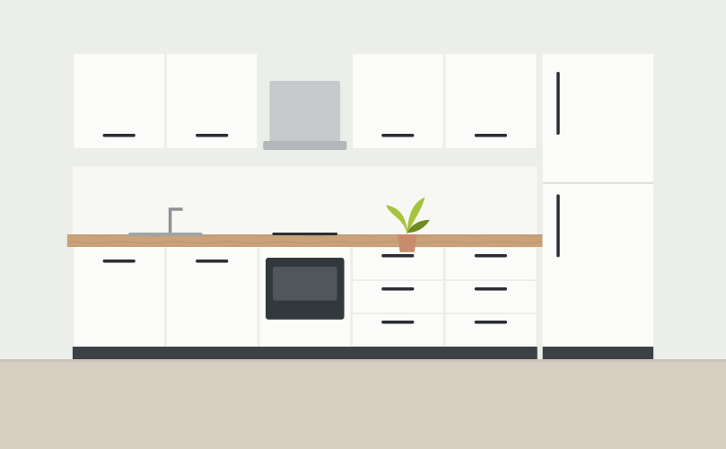
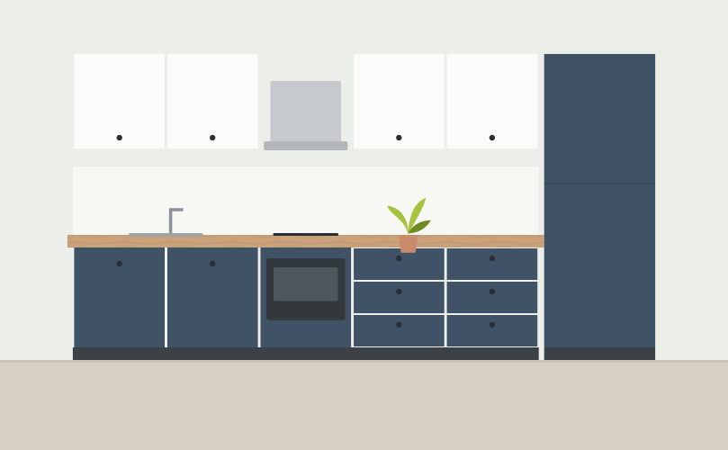
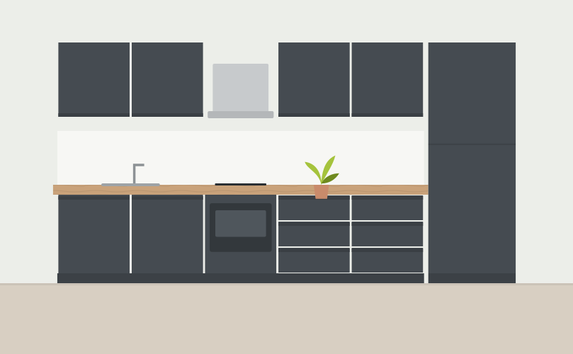

Главное за 30 секунд
- Правило 60-30-10: основной цвет, второй цвет и небольшой акцент.
- Светлые фасады визуально увеличивают комнату, тёмные – собирают взгляд.
- Смотрите образцы дома, при дневном свете и рядом с полом.
- Дерево сочетается почти со всем – оно «согревает» любую гамму.
Правило 60-30-10
Это простой способ не перегрузить интерьер:
- 60 % – основной цвет. Обычно это стены и большая часть фасадов.
- 30 % – второй цвет: столешница, нижний ряд кухни, пол.
- 10 % – акцент: ручки, техника, посуда, растения.
Белый
Кашемир
Шалфей
Глубокий синий
Графит
Дуб
Три сочетания, которые работают почти везде



Свет и размер помещения
- Комната маленькая или окна на север – выбирайте светлые и тёплые оттенки.
- Много солнца – можно смелее: тёмные и насыщенные цвета не будут мрачными.
- Высокие шкафы до потолка лучше делать в цвет стен – они «растворяются».
Матовое или глянцевое
Глянец отражает свет и делает комнату светлее, но на нём видны отпечатки пальцев и разводы. Матовые фасады спокойнее и практичнее. Хороший компромисс – матовый низ и глянцевый верх, до которого реже дотрагиваются.
Как проверить выбор
🎨Попросите образцы на замере. Приложите их к полу, стене и столешнице у себя дома, посмотрите утром и вечером. Цвет в магазине и в каталоге почти всегда выглядит иначе.